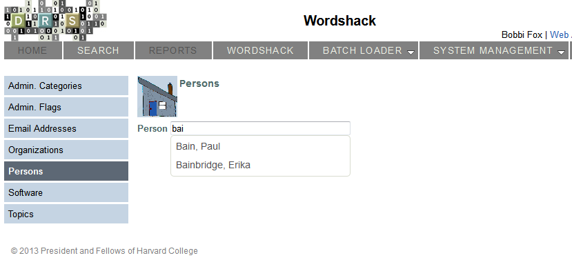

Thank you, OCLC!
The challenge:
Provide a web-based mechanism for getting VIAF information
Create a new Person Term
Edit a Person Term
Add relationships to Person
Wordshack already uses the jQuery UI autocomplete widget

All we would then have to do is figure out where to put it
... possibly in more than one place
A word on "technical deficit"...
Bobbi Fox
Library Technology Services, Harvard University
bobbi_fox@harvard.edu
@bobbi_fox_SMR
github: bobbi-SMR